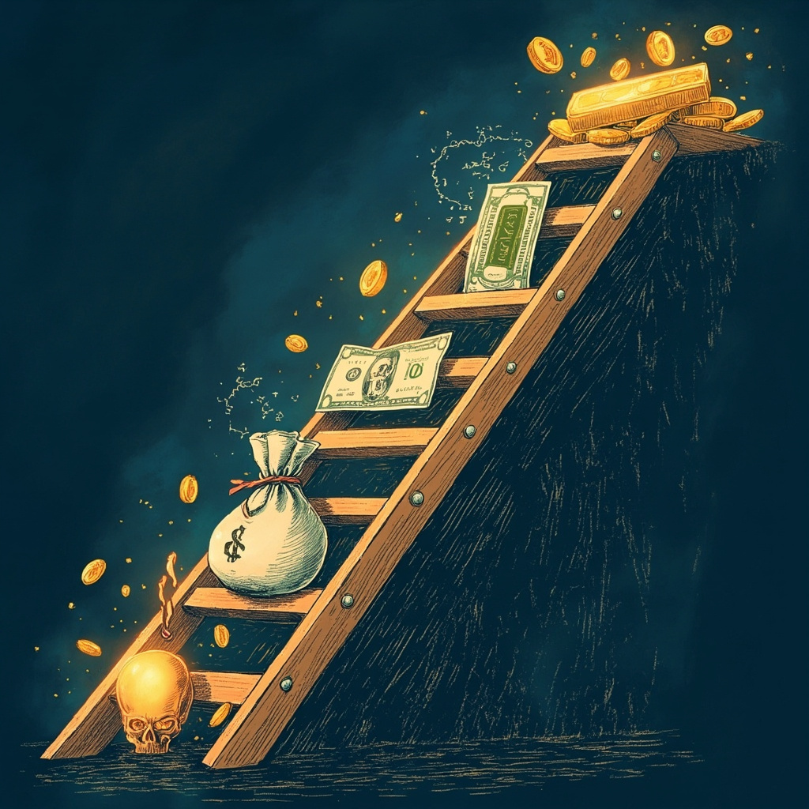
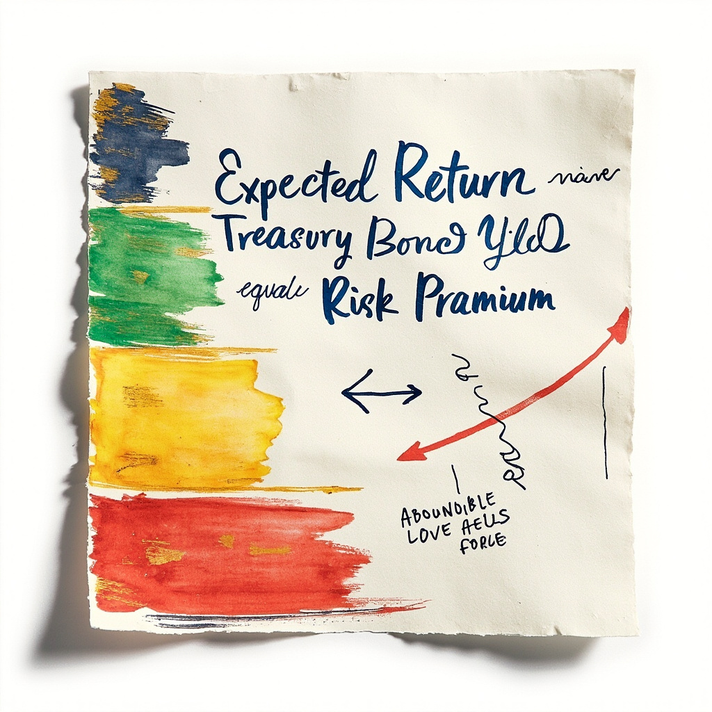
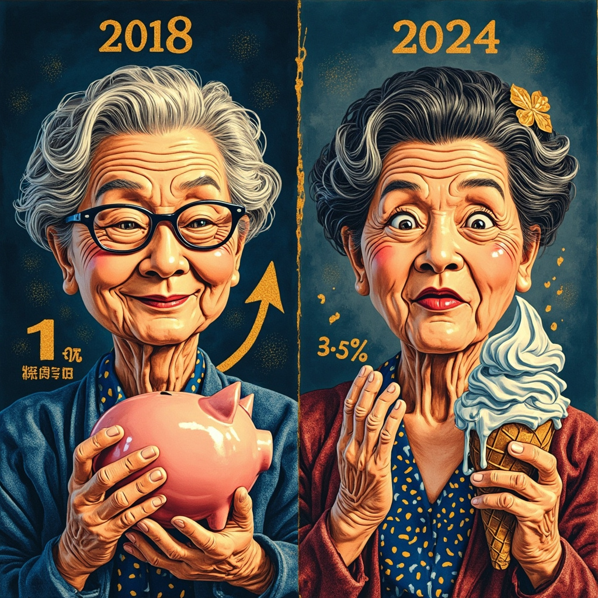
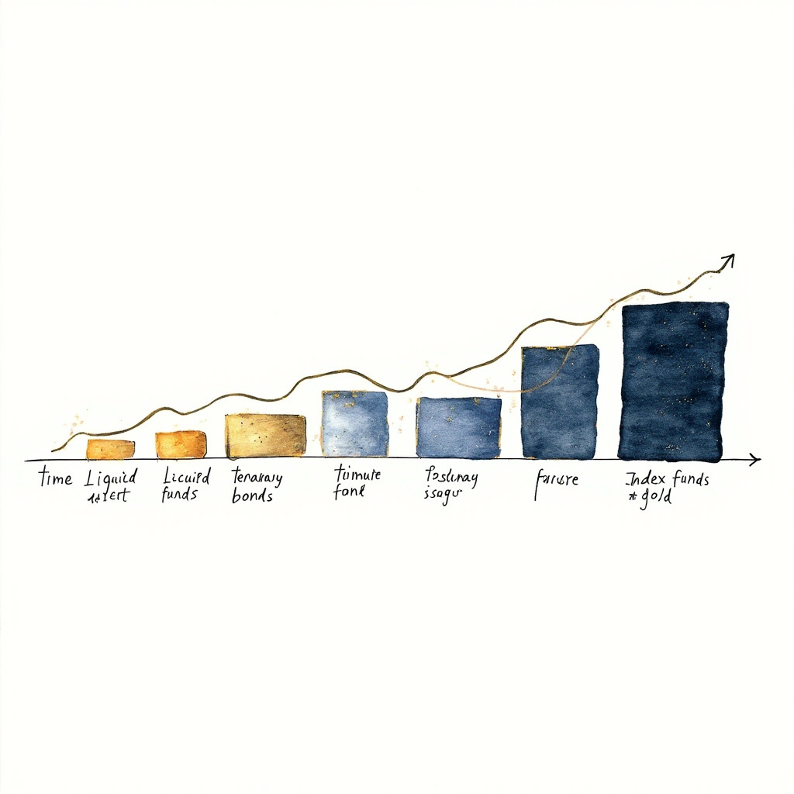

今天发工资，看着银行卡余额，第一次认真想：我存100万，一年能拿1.3万利息，听起来好像还不错？
然后我看到一句话："你以为在存钱，其实钱在蒸发。"
那一刻我整个人都不好了……
🚨 金融学第一定律：预期收益越高，承担的风险就越大。没有例外。

风险不是"亏钱概率"
很多人以为风险=亏钱的概率。大错特错！
📐 风险 = 收益的波动幅度（不确定性）
波动≠亏损。但波动大会让你"以为要亏"，被迫在低点割肉——那才是真亏。
8级收益-风险阶梯（金融小白的地图）
这是开盛老师整理的8级阶梯，越往上收益越高，风险也越大：
- 货币基金：1.3%年化，几乎无回撤（R1）
- 国债：2.5-3.5%，最大回撤5%（R1-R2）
- 银行理财：3-4.5%，回撤3-5%（R2）
- 储蓄险：2.5-3%，提前退保亏本（R2）
- 黄金ETF：5-8%长期，回撤30%（R3）
- 沪深300：8-12%长期，回撤50%（腰斩过）（R4）
- 单一股票：不确定，可能归零（R5）
- 民间借贷：15%+，可能跑路本金没了（R6 💀）
🚩 听到"无风险高收益"立刻跑。 真正无风险只有：国债、50万内存款、国债逆回购。

风险溢价（理财性价比判断法）
理财产品值不值得买？看一个数就够了——
📐 风险溢价 = 产品预期年化 - 同期限国债年化
这个数字告诉你：产品"多给的钱"值不值得你冒的险：
- 0-1% ❌ 不值得冒险
- 1-3% ✅ 合理范围
- 3-5% ⚠️ 警惕，问"为什么这么高"
- 5%+ 🚫 骗子来了，跑
实操三例：
- 银行理财R2：4% - 2.5% = 1.5% ✅ 合理
- 沪深300长期：10% - 2.5% = 7.5% ⚠️ 高但可解释
- 民间借贷"保本"：18% - 2.5% = 15.5% 🚫 必定骗子
年化收益率的4大猫腻
理财广告最爱玩的文字游戏：
- 七日年化2.5%：今天的数≠明天的数，7天快照不是规律
- "近1月0.8%"≠"年化9.6%"：短期高收益=噪声，不是规律
- 业绩比较基准4% ≠ 保底4%：可能4%、2%、甚至亏
- 保险预定利率3% ≠ 实际3%：前10年IRR可能只有1-2%
🎯 30/365/3年三段验证法：买理财前问三句—— 最近30天年化多少？（看当下） 最近365天年化多少？（看趋势） 最近3年年化多少？（看规律） 三段都6% → 真本事；只有30天6% → 大概率回光返照
单利vs复利：30年差出一辆车
100万、5%年化、30年：
- 单利：250万
- 复利：432万
- 差了182万——一辆保时捷没了

灭火器 vs 水电站（最让我震撼的比喻）
第12课最让我醍醐灌顶的就是这个比喻：
🚒 存款 = 灭火器（救命用，关键时刻拿出来灭火） 💰 投资 = 水电站（赚钱用，长期发电创造收益）
存款不是理财工具，是流动性工具。 投资不是赌博，是抗通胀工具。
188万场景真实算账（假设通胀5%）
假设当前通胀5%（这是举例的假设数字，实际通胀因地区、时期、统计口径而异），看看100万在不同资产下一年后的真实结果：
- 100万存银行：名义+1.3% - 通胀5% = -3.7%，一年净亏3.7万
- 100万买国债：名义+2.5% - 通胀5% = -2.5%，一年净亏2.5万
- 100万买沪深300：长期+10% - 通胀5% = +5%，一年净赚5万
同样是"存银行"，10年前赚钱，现在亏钱。
- 2018大妈：存100万赚1万 ✅
- 2024大妈：存100万亏3.7万 ❌

"现金为王"是1980代金句，2024毒药
10年前存款利率3%，通胀2%，存钱就是赚钱。 现在存款1.3%，通胀5%，每100万一年蒸发3.7万。
📉 10年后100万的购买力 = 68万（贬值32%） 📉 30年后100万的购买力 = 30万（贬值70%）
通胀是不动声色的小偷，每年偷走你购买力的5%。
正确活法：按时间和用途分
钱没有"该放哪"的标准答案，决定怎么放的是时间和用途：
- 3-6个月生活费 → 活期/货币基金（流动性优先）
- 1-3年短期目标（买车/装修）→ 国债/银行理财（短期不亏）
- 3-10年中期 → 储蓄险+部分债券（平衡收益）
- 10年以上（养老/教育金）→ 指数基金（让复利发酵）
- 不指望赚钱 → 黄金ETF（法币失灵时救命）
🎯 决定"怎么放"的不是收益率，是时间和用途。
风险与收益的三大公式
🎯 风险 + 时间 = 风险被"熨平" 🎯 风险 + 分散 = 风险被"切碎" 🎯 风险 + 通胀 = 实际收益
风险不是被消除，是被重新定义。
三个判断方法（金融小白的护身符）
- 🚩 判断1：听到"无风险高收益"立刻跑
- 🚩 判断2：收益比国债高3倍以上，默认骗子
- 🚩 判断3：投资前问"全没了能接受吗？" 不能→减仓；能→按计划持有
🎯 「存款是灭火器，不是水电站。」
🎯 「现金为王是1980代金句，2024年毒药。」
🎯 「听到无风险高收益，立刻跑。」
🎯 「风险溢价 = 预期年化 - 同期限国债年化」（理财性价比判断法）